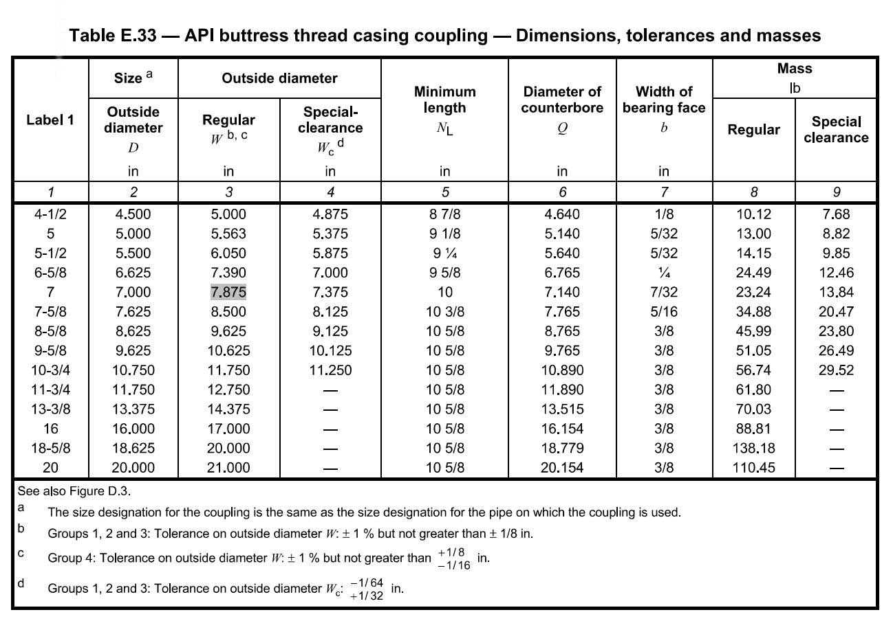
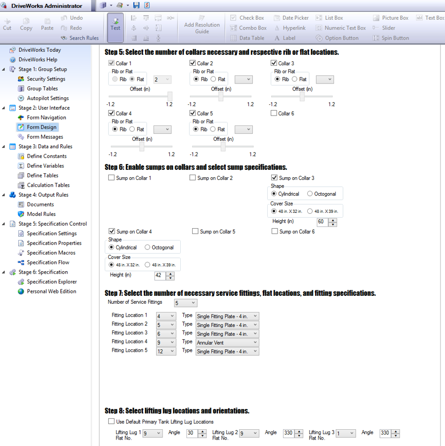
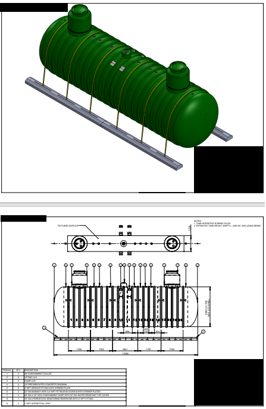

Managing large product lines will result in unnecessary resource expenditure; even the smallest change to a standard dimension or a tolerance could cause over a hundred models and drawings to be revised, checked, and approved.
I have successfully streamlined and automated several product lines in SolidWorks to relieve this resource usage, generating models and drawings for entire product lines with simple user inputs.
| In one client's case, they often found themselves having to update hundreds of drawings due to code changes year-to-year for their regulated products. I provided a solution in the form of SolidWorks design table, where I created a base model for each of their product lines and controlled all dimensions, including regulated dimensions, using these tables. Using this table, the drafter would only have to change the relevant dimensions on the design table instead of changing hundreds of drawings individually, streamlining and setting the company up for easier updates.  |
| In another client's case, I observed that their customized tank products were modular in nature and could be automated through programming. That is to say, although there were a vast variety of locations a client could select accessories to be, each individual accessory followed its own strict set of location rules.
I translated these rules into logic-based coding and applied them onto a form interface. A drafter or client could interact with this form and instantly get a perfect model and drawing, just pending signoff from an engineer.
This automation method was tested versus a drafter, and it proved to save 50% of drafting and modelling time.
  |